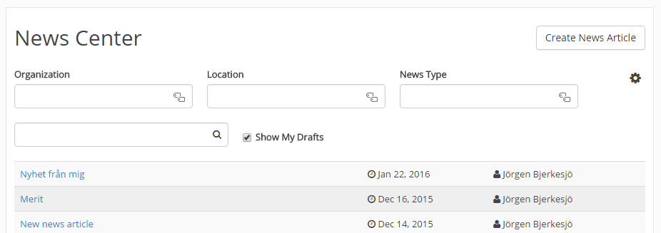
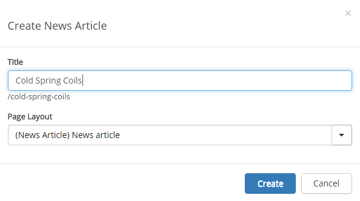
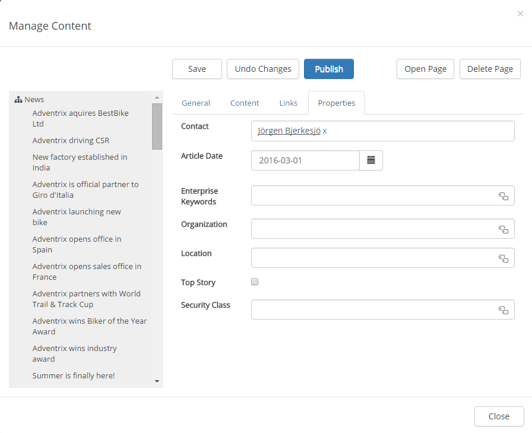
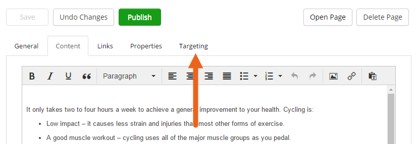
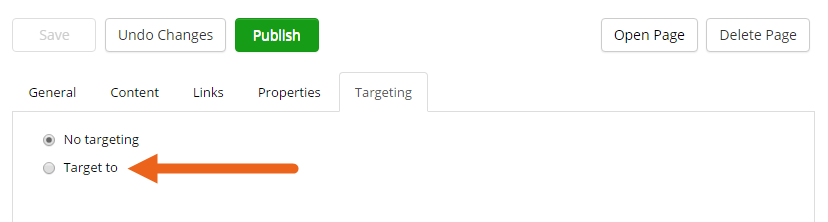
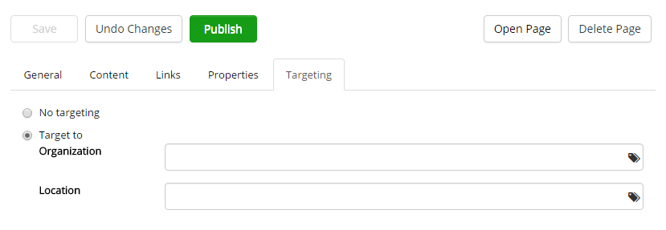
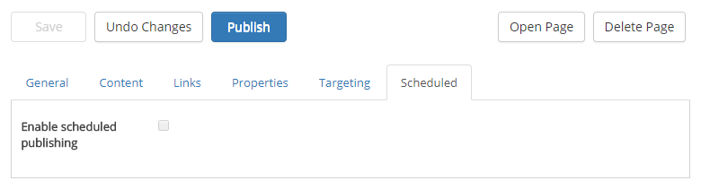
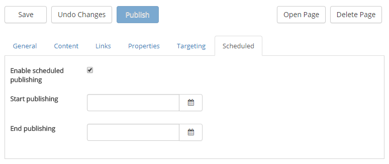

News articles can be created by any user that has permission to do so. How the permissions is set up may differ, but very often there is a separate permission group for News Authors.
Creating, editing and publishing a news article is very similar to working with a publishing page (a news article is in fact a page). See this description for general information on how to work with pages:
Introduction to Content Management
Here we will have a look at what's different with a news article page.
The first step is to go to the news archive. If you can't find it, there's a link at the bottom of the news list.
If you are permitted to create news articles you will see the button "Create News Article". If there are news article you have created, but not yet published, select "Show My Drafts" to see them.

The name of the news page will also be suggested as the title, but can be edited.

Note: the tabs "General", "Contents" and "Links" works exactly the same for news pages as for publishing pages. The Properties tab is normally somewhat different:

Targeting will decide what users will see in the news list, and as a top story, on the start page. It has no effect in the news archive. All users can always read all news there, and will find them through search.
You never have to use targering, it's something you as a news editor can use when needed.
For an editor to be able to target the news, the following is required (done by an administrator):
For more information about Targeting Definitions, see:
For more information about Content Management settings, see:
Here's how to target a news article:


When that is done there will be either a drop down list to select a group from, or one or more fields to select terms from, for example:

If Scheduling is activated for the News Site, a "Scheduled" tab is shown:

Click to enable Scheduled publishing for the news page and set start date and time and, if you wish, end date and time. If you don't set end date and time, the news page is displayed a number od dayes according to the default news settings.

When you select to activate scheduled publishing for a news page the Publish button is deactivated. You just save the page the normal way. The page then is automaticelly published the start date and time you have set.